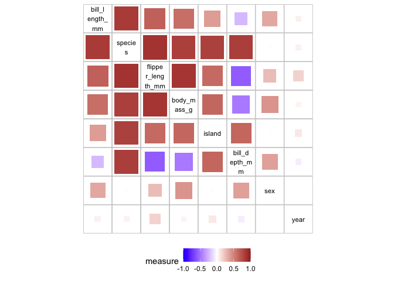
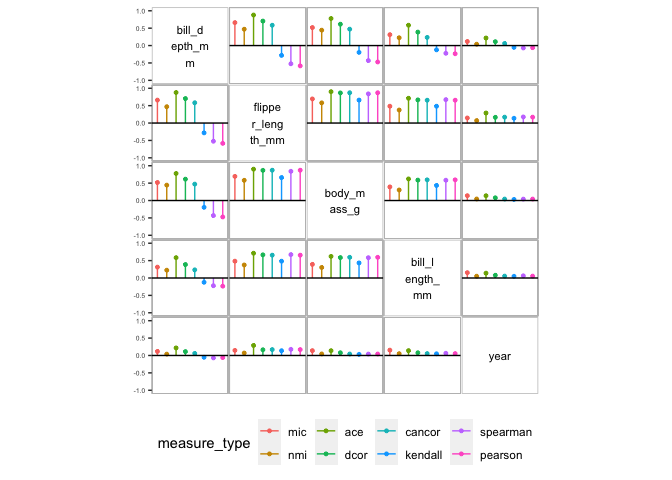
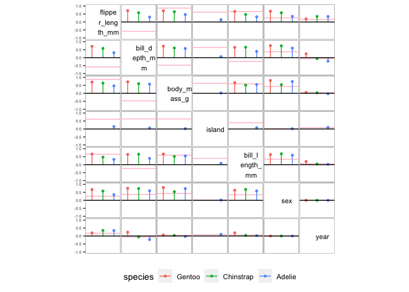

The goal of corVis is to visualise association and conditional association. The conventional correlation matrix displays are extended to include every variable pair, in order to visualise all pairwise associations in the dataset. Display with multiple association measures is introduced for a comparison of the measures. A conditional association display is also introduced to explore the difference in association at different levels of conditioning variable.
Installation
You can install the development version of corVis from GitHub with:
# still in progress
# install.packages("devtools")
# devtools::install_github("chinwan16/corVis")Example 1: Pairwise display for every variable pair in a dataset
This is an example of an association measures display for every variable pair in the dataset. We will use penguins dataset from palmerpenguins package in R.
library(corVis)
# install.packages("palmerpenguins")
library(palmerpenguins)
penguins_df <- palmerpenguins::penguins
penguins_assoc <- calc_assoc(penguins_df)
plot_assoc_matrix(penguins_assoc)
Example 2: Multiple measures display for comparison of association measures
This example shows a display of multiple association measures for all the variable pairs. This display is useful in comparing the multiple measures in order to reveal variable pairs with high difference among the measures.
penguins_num <- dplyr::select(penguins_df,where(is.numeric))
penguins_compare <- calc_assoc_all(penguins_num)
plot_assoc_matrix(penguins_compare,
var_order = "default",
limits = c(-1,1))
Example 3: Conditional association display
This example shows a conditional association display at different levels of a conditioning variable (species in this case). This display is useful in for exploring variable pairs with high difference in the measure value at different levels of a conditioning variable.
penguins_cond <- calc_assoc(penguins_df, by="species")
plot_assoc_matrix(penguins_cond)